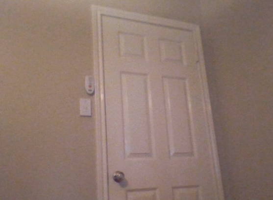
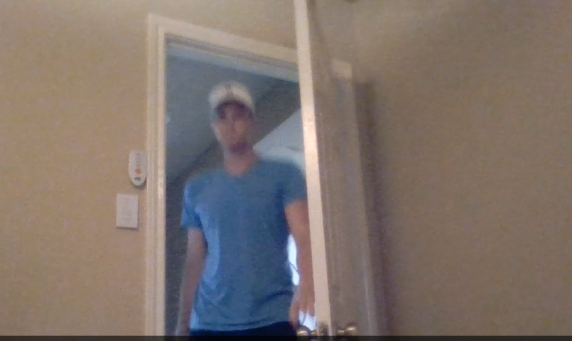
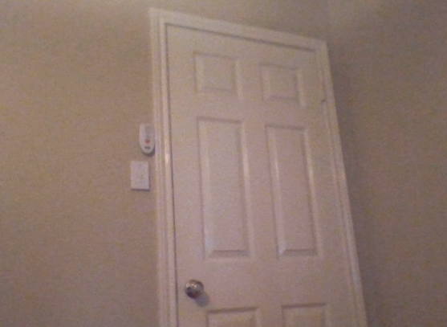
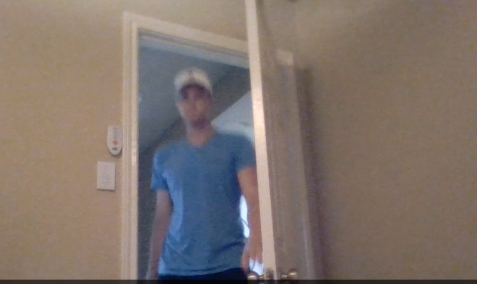

Want to make sure your home is secure while you're gone?
1.) Point your webcam towards your door or valuable item and press the SECURE button.

2.) Stand in view of your secured area and press the ARM button.

3.) Turn your volume up and scare off intuders! Now you can leave in peace after you hear the test alarm.
1.) Point your webcam towards your door or valuable item and press the SECURE button.

2.) Stand in view of your secured area and press the ARM button.

3.) Turn your volume up and scare off intuders! Now you can leave in peace after you hear the test alarm.